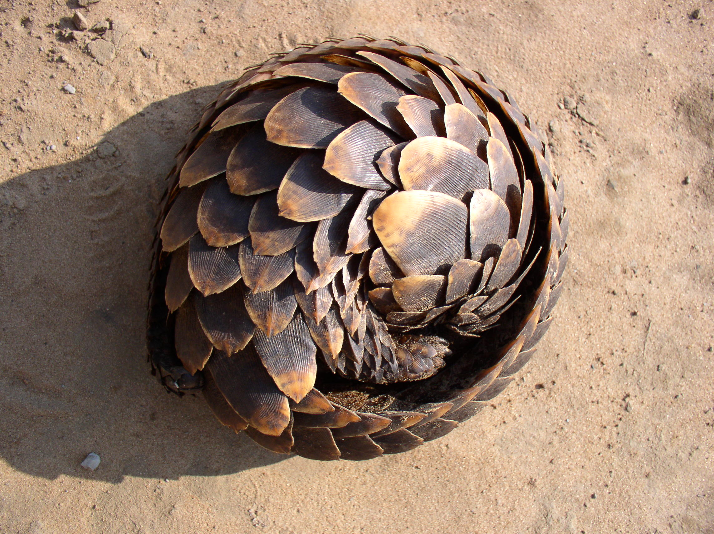

Pangolins are one of seven mammal species from the order Pholidota, ranging in Asia and Africa, they are nocturnal insectivores that primariy feed on the Ants and Termites they unearth with long claws on their forelimbs, before scooping them up with their long sticky tounges.
They are most well known for the keratonous scales that cover their backs, when threatened they curl up tightly into a ball of armour plates making for a tough fortress that keeps them safe from a wide range of threats.
Ironically these same scales are the main driver of their drastic population decline, considered a powerful ingredient in folk medicine, their meat and scales have become a prized commodity in many human societies local to their habitats, most notably China and Vietnam.
It's not much better in yonder Africa, In some cultures their body parts are believed to have powerful spiritual purposes, such as their flesh bringing good luck or bestowing the user with divination or their scales warding off sickness or witchcraft.
The global crack down on the ivory trade has only worsened things for the humble pangolin, as poachers quickly shifted their trade to mammal to make ends meet, their hides are a common sight in many african markets.
Alongside a recorded history of the pangolin trade existing for hundredes of years, it's no wonder they are quite litterally the world number one most trafficked animal, making up for approximately 20% of all black market trade. Experts estimate that between 10 000 to 100 000 pangolins are poached each year.
Although pangolins aren't as well known as many of the other endangered animals such as tigers and elephants, they are fundamentally just cute little guys, with their small size and silly way of walking, pangolins are quite endearing in their own way.
Furthermore, despite their scales and tough exterior they are quite cuddly creatures, with young pangolins often holding on firmly to their handlers or stuffed animals it's simply what makes them feel safe! Snuggling is a funamental trait of young pangolins as wild pangopups cling to their mothers back or tail, traveling with her as she forages.
Pangolins sit in a real sweet spot of weird and cute that, with the right marketing, could drive them into the public conciousness and bring about real change in their hope for survival in an increasingly hostile world.
Thank you for reading this far, I really hope this has helped shed some light on the difficulties faced by this often obscure little mammal. I for one plan on making pangolins an increasingly large part of my personality.
If you are interested in learning more or helping to save pangolins, you can click this link or search for SavePangolins.org